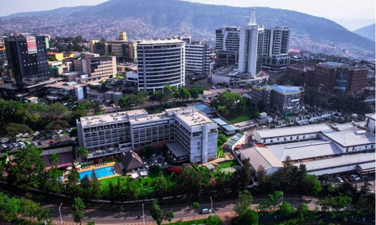
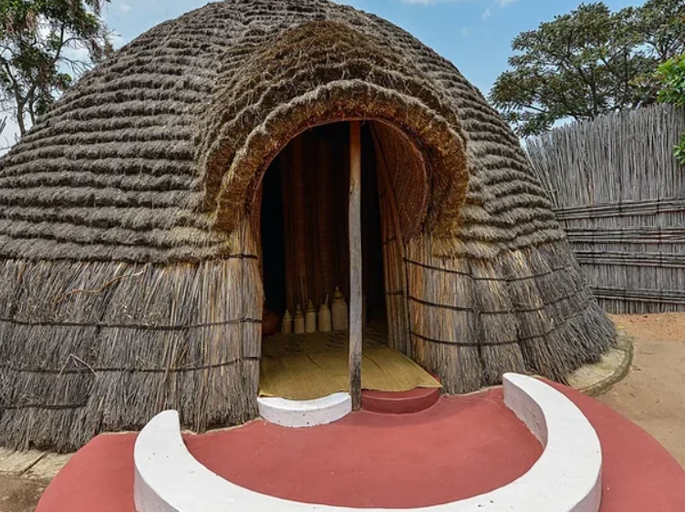
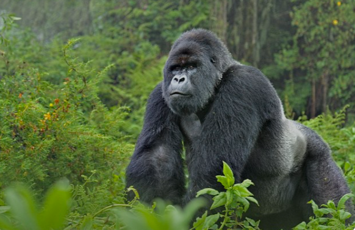

Beautiful City: Kigali

Kigali, the capital city of Rwanda, is a shining example of urban development
and environmental sustainability. Known for its immaculate streets and vibrant
neighborhoods, Kigali offers a blend of modernity and tradition.
The city is also a hub for business
and innovation, making it a significant player in East Africa.
Tourists and locals alike enjoy the lively markets, stunning landscapes,
and diverse dining options that Kigali has to offer.
Cultural Heritage

Rwanda's rich cultural heritage is a testament to its history and traditions.
The country's culture is celebrated through traditional dance, music, and crafts.
One of the most iconic cultural expressions is the Intore dance, performed by warriors
in intricate costumes. Rwanda's cultural festivals and museums offer a deep dive into its
artistic legacy, while community gatherings and ceremonies keep traditions alive. The strong
sense of identity and pride in their heritage is evident in every aspect of Rwandan life.
Wildlife: Mountain Gorillas

Rwanda is world-renowned for its wildlife, particularly
the endangered mountain gorillas and rwanda is beautiful country.
These majestic animals can be found in Volcanoes National Park,
a lush and protected area that attracts eco-tourists from around the globe.
Trekking to see the gorillas in their natural habitat is a once-in-a-lifetime experience.
The conservation efforts in Rwanda have not only helped
to protect these incredible creatures but also provided
a source of sustainable tourism that benefits local communities.
Location
Rwanda is a landlocked country located in the heart of East-Central Africa.
It shares borders with Uganda to the north, Tanzania to the east, Burundi to the south,
and the Democratic Republic of the Congo to the west. Known as the "Land of a Thousand Hills,
" Rwanda is characterized by its rolling landscapes and diverse ecosystems. The country's strategic location and breathtaking
scenery make it a unique destination for travelers looking to explore
the natural beauty and cultural richness of Africa.